Práctica 6.2 - Despliegue de una aplicación PHP con Nginx y MySQL usando Docker y docker-compose
Introducción
¿Que es docker-compose?
Docker Compose es una herramienta versátil que te permite definir y gestionar aplicaciones multi-contenedor de forma sencilla. Con Docker Compose, puedes describir la configuración de tu entorno de desarrollo en un archivo YAML, especificando los servicios, volúmenes y redes necesarios para tu aplicación.
Para usarlo deberemos seguir los siguientes pasos:
-
Definir el entorno de nuestra aplicación con un Dockerfile para que pueda usarse en cualquier lugar.
-
Definir los servicios que componen la aplicacion en
docker-compose.yml. -
Ejecutar
docker compose up -dpara que Docker lanza la aplicación.
Instalación de docker-compose
Proceso de dockerización de Nginx+PHP+Mysl
1. Estrucutra de directorios
En esta practica vamos a seguir la siguiente estructura de directorios para que todas las rutas que usemos funcionen:
/usuario/Documentos/practica6-2/
├── docker-compose.yml
├── nginx
│ ├── default.conf
│ └── Dockerfile
├── php
│ └── Dockerfile
└── www
└── html
└── index.php
Por lo tanto vamos a ir creado estos directorios y archivos y posteriormente los iremos rellenando.
cd ~/Documentos
mkdir practica6-2
cd practica6-2
touch docker-compose.yml
mkdir nginx
touch nginx/default.conf
touch nginx/Dockerfile
mkdir php
touch php/Dockerfile
mkdir www/html -p
touch www/html/index.php
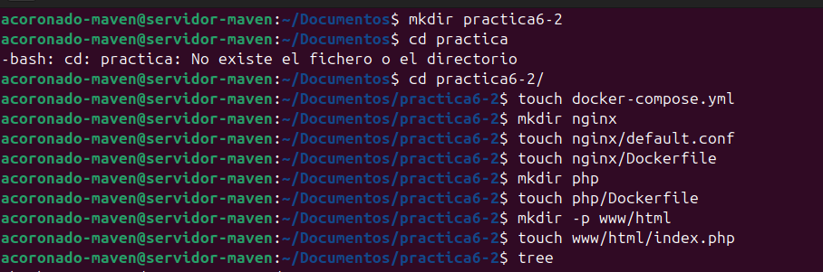
2. Creación de un contenedor Nginx
Para empezar, necistamos crear y correr un contenedor Nginx para que nuestra aplicación PHP se pueda mostrar en los navegadores.
Dentro de la carpeta /usuario/home/practica6-2 debemos modificar el archiv docker-compose.yml
Y editamos este archivo e introducimos las siguientes lineas:
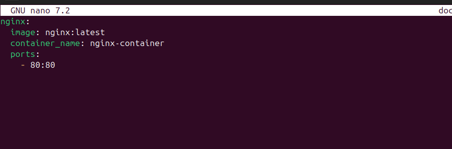
Una vez modificado este archivo, se encargará de descargarse ña última versión de la imagen de Nginx, crear un contenedor y publicar en el puerto 80 del contenedor que también usara el 80 en la maquina anfitriona (80:80).
Iniciamos esto con:
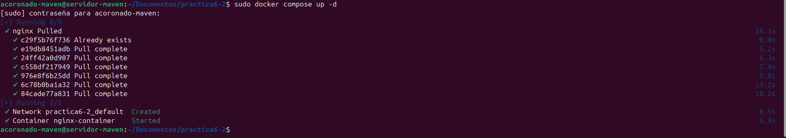
Para comprobar que el contenedor está corriendo, deberemos ejecutar el siguiente comando:
Y deberia de salirnos algo así
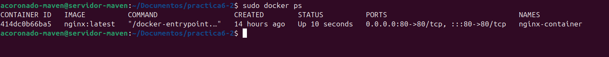
Además, si intentamos conectarnos desde el navegador de nuestra maquina anfitriona y accedemos a la dirección ip de la máquina donde esta alojado el contenedor deberia de salir página de bienvenida de nginx.
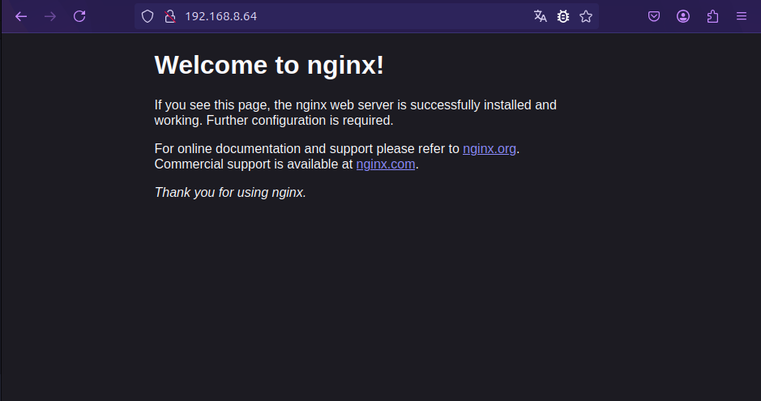
3. Creación del contendor PHP
Como ya hemos creado previamente los archivos deberemos irnos a www/html/index.php
Y dentro de index.php añadiremos el siguiente código:
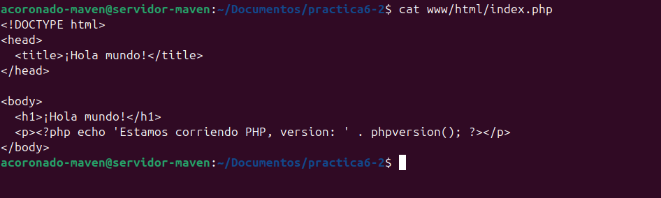
Tras esto procederemos a rellenar el archivo de configuración de nginx ubicado en ./nginx/default.conf. Donde colocaremos la siguiente configuración.
server {
listen 80 default_server;
root /var/www/html;
index index.html index.php;
charset utf-8;
location / {
try_files $uri $uri/ /index.php?$query_string;
}
location = /favicon.ico { access_log off; log_not_found off; }
location = /robots.txt { access_log off; log_not_found off; }
access_log off;
error_log /var/log/nginx/error.log error;
sendfile off;
client_max_body_size 100m;
location ~ .php$ {
fastcgi_split_path_info ^(.+.php)(/.+)$;
fastcgi_pass php:9000;
fastcgi_index index.php;
include fastcgi_params;
fastcgi_param SCRIPT_FILENAME $document_root$fastcgi_script_name;
fastcgi_intercept_errors off;
fastcgi_buffer_size 16k;
fastcgi_buffers 4 16k;
}
location ~ /.ht {
deny all;
}
}
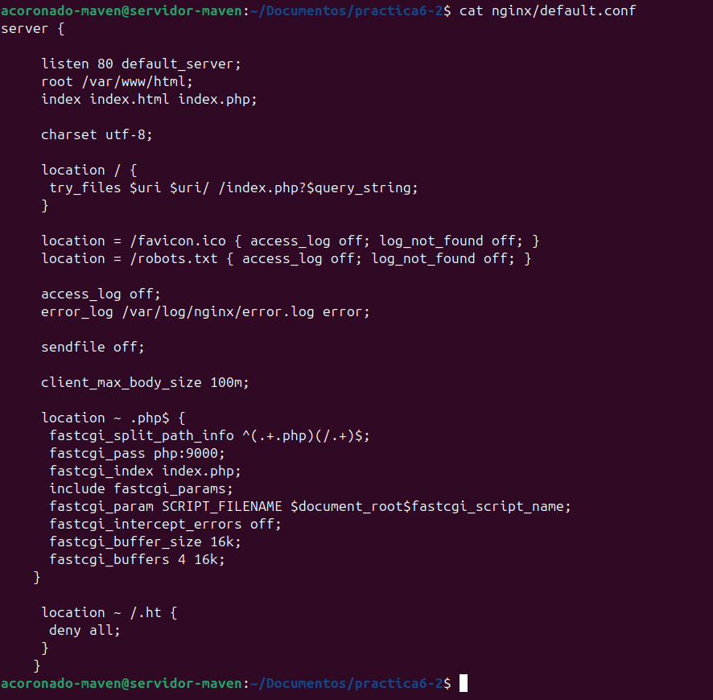
Por último modificaremos el archivo Dockerfile dentro de la carpeta nginx para indicarle a docker que tiene que copiar esta configuración dentro del contenedor.
Contenido:
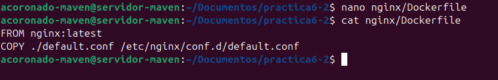
Ahora editaremos nuestro archivo docker-compose.yml añadiendo el nuevo servicio de php y modificando el de nginx.
services:
nginx:
build: ./nginx/
container_name: nginx-container
ports:
- 80:80
links:
- php
volumes:
- ./www/html/:/var/www/html/
php:
image: php:7.0-fpm
container_name: php-container
expose:
- 9000
volumes:
- ./www/html/:/var/www/html/

Tras estos cambios, procederemos a lanzar los contenedores con:
Atención
Recordad ejecutar docker compose down si no lo habeis hecho antes, para iniciar la nueva configuración.
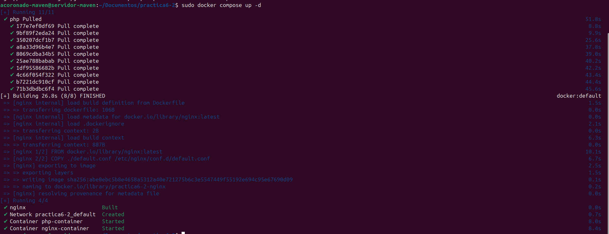
Y una vez que los contenedores esten levantados al hacer:
Se dberia ver algo así:
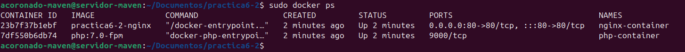
Y si ahora volvemos a acceder a la ip del a máquina virtual desde el navegador, veremos la página que hemos creado en index.php
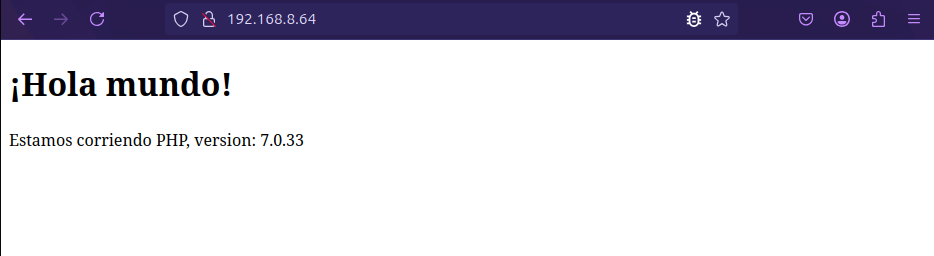
4. Creación de un contenedor para datos
Como habeís podido observar, hemos montado el directorio www/html en ambos contenedores, el de nginx y el de php. Sin embargo, esta no es una forma adecuada de hacerlo. En este paso crearemos un contenedor independiente el cual será el encargado de contener los datos y lo enlzamos con el resto de contenedores.
Para logra esto deberemos modificar el archivo docker-compose.yml:
services:
nginx:
build: ./nginx/
container_name: nginx-container
ports:
- 80:80
links:
- php
volumes_from:
- app-data
php:
image: php:7.0-fpm
container_name: php-container
expose:
- 9000
volumes_from:
- app-data
app-data:
image: php:7.0-fpm
container_name: app-data-container
volumes:
- ./www/html/:/var/www/html/
command: "true"
````
Tras hacer este modificación ejecutaremos el comando:
```dockerfile
docker-compose up -d
Y volvemos a verificar que están corriendo todos los contenedores.
Deberiamos ver algo parecido a esto:

5. Creación de un contendor Mysql
En este apartado vamos a crear un contenedor con una base de datos Mysql y lo enlazaremos con el resto de contenedores.
Primero deberemos modificar el dockerfile de la carpeta php para descargar e instalar una extensión para Mysql.
Contenido del Dockerfile:
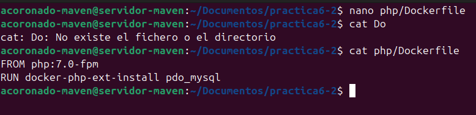
Y ahora deberemos modificar otra vez el archivo docker-compose.yml para añadir el nuevo servicio de Mysql
services:
nginx:
build: ./nginx/
container_name: nginx-container
ports:
- 80:80
links:
- php
volumes_from:
- app-data
php:
build: ./php/
container_name: php-container
expose:
- 9000
links:
- mysql
volumes_from:
- app-data
app-data:
image: php:7.0-fpm
container_name: app-data-container
volumes:
- ./www/html/:/var/www/html/
command: "true"
mysql:
image: mysql:5.7
container_name: mysql-container
volumes_from:
- mysql-data
environment:
MYSQL_ROOT_PASSWORD: secret
MYSQL_DATABASE: mydb
MYSQL_USER: myuser
MYSQL_PASSWORD: password
mysql-data:
image: mysql:5.7
container_name: mysql-data-container
volumes:
- /var/lib/mysql
command: "true"
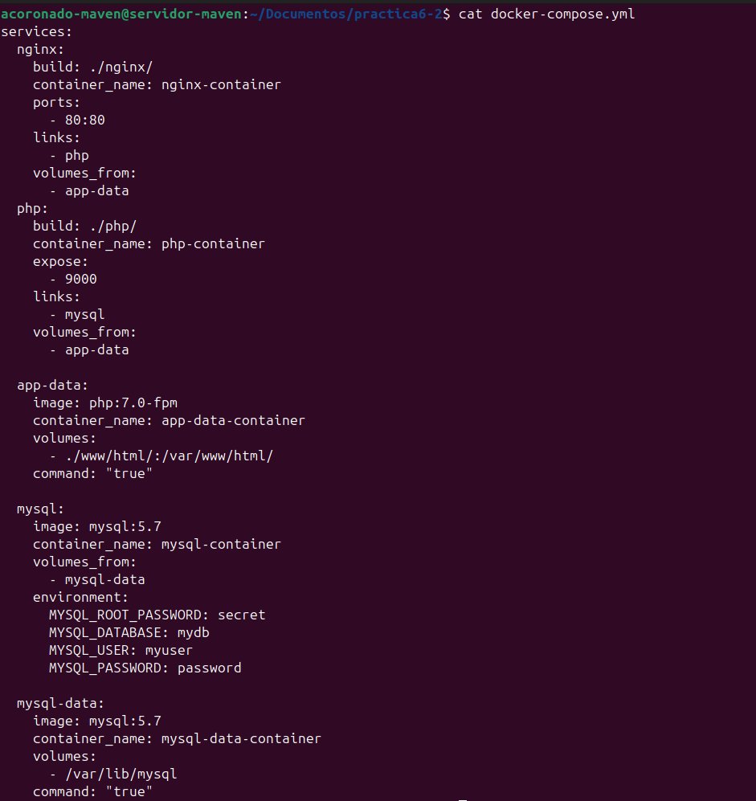
Tras realizar esta modificación debemos modificar el archivo index.php y hacer los siguientes cambios:
<!DOCTYPE html>
<head>
<title>¡Hola mundo!</title>
</head>
<body>
<h1>¡Hola mundo!</h1>
<p><?php echo 'Estamos corriendo PHP, version: ' . phpversion(); ?></p>
<?
$database ="mydb";
$user = "myuser";
$password = "password";
$host = "mysql";
$connection = new PDO("mysql:host={$host};dbname={$database};charset=utf8", $user, $password);
$query = $connection->query("SELECT TABLE_NAME FROM information_schema.TABLES WHERE TABLE_TYPE='BASE TABLE'");
$tables = $query->fetchAll(PDO::FETCH_COLUMN);
if (empty($tables)) {
echo "<p>No hay tablas en la base de datos \"{$database}\".</p>";
} else {
echo "<p>La base de datos \"{$database}\" tiene las siguientes tablas:</p>";
echo "<ul>";
foreach ($tables as $table) {
echo "<li>{$table}</li>";
}
echo "</ul>";
}
?>
</body>
</html>
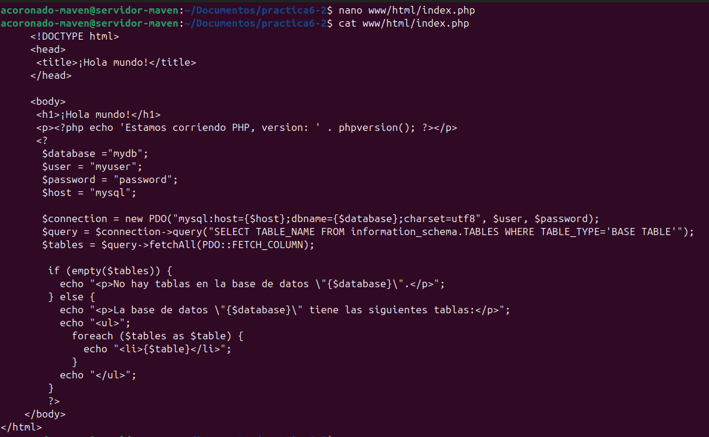
A continuación volvemos a lanzar los contenedores y verificamos que están ejecutandose:
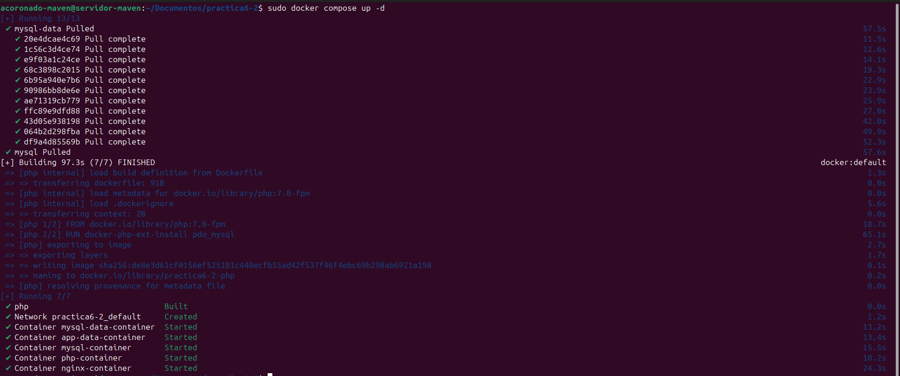
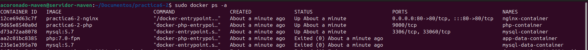
6. Verificación de conexión a la base de datos
Si ahora intentasemos acceder a la dirección de nuesta maquina, deberiamos de obtener la siguiente pantalla:
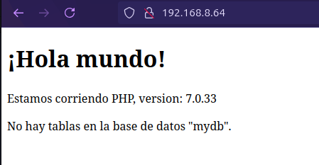
Como se puede ver la aplicación nos indicar que no hay tablas en la base de datos mydb esto se debe a que al copiar el archivo php no hemos configurado el nombre de usuario ni la contraseña. Por lo tanto deberemos cambiar las siguientes líneas:
Una vez modificado y guardado si referescamos la página deberia de salirnos las tablas indicando que la aplicación esta funcionando correctamente.
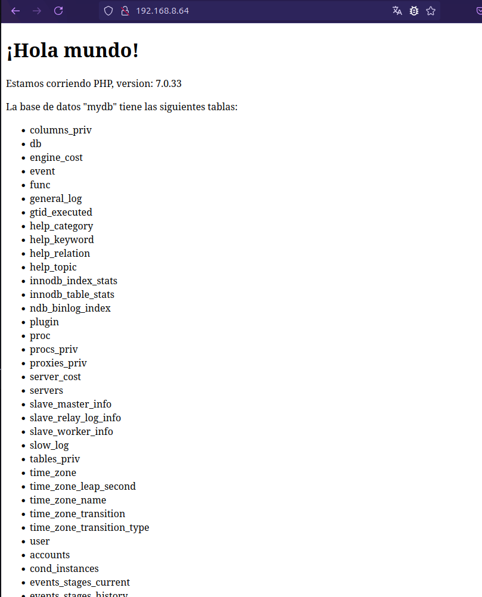
Habiendo completado asi, el despliegue de nuestra aplicación php, con mysql y nginx.